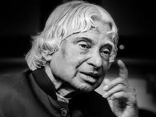
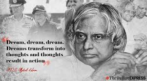

Dr. A. P. J. Abdul Kalam
Former President of India

Here's a time line of Dr. APJ Abdul Kalam's life :
- July 27, 2015 - Passes away in Shillong, Meghalaya Kalam passes away aged 83, after collapsing because of a cardiac arrest while delivering a
lecture at IIM Shillong
- 2012 - Launches 'What Can I Give Movement Kalam launches the ‘What Can I Give Movement’, a programme for the Indian youth aimed at
defeating corruption
- 2002 - 2007 - Elected as India's 11th President Kalam is elected the 11th President of India succeeding KR Narayanan. He won the
2002 presidential election with an electoral vote of 922,884. During his five years in office, he was fondly called ‘The People’s President'
- 1999 - 2001 - Serves as India’s Chief Scientific Adviser Serves as Principal Scientific Advisor to the Government of India
- 1998 - Spearheads the Pokhran mission India conducts the Pokhran II nuclear tests with Kalam being one of the forces behind its success
- 1997 - Honoured with the Bharat Ratna Kalam is awarded the Bharat Ratna, India's highest civilian honour for his contribution to the scientific
research and modernisation of defence technology in India.
- 1992 - 1999 - Appointed India’s Chief Scientific Adviser Kalam is appointed as the Chief Scientific Adviser to the Prime Minister and the Secretary of the DRDO
- 1990 - Honoured with Padma Vibhushan Kalam is awarded the Padma Vibhushan, India’s second highest civilian honour
- 1990 - Honoured with Padma Vibhushan Kalam is awarded the Padma Vibhushan, India’s second highest civilian honour
- 1981 - Recieves the Padma Bhushan Kalam recieves the Padma Bhushan for his contribution to the field of science and technology
- 1980 - 1990 - Develops Prithvi and Agni missiles As the chief of the Integrated Guided Missile Development Programme, he is credited with the development and operationalisation of Agni and Prithvi missiles.
- 1980 - Lead's India's entry in the Space club Kalam leads India’s efforts to enter the space club by putting the Rohini satellite in Earth's orbit with the first indigenous SLV-III
- 1969 - Moves to ISRO Kalam moves to the Indian Space Research Organisation (ISRO) where he helms India's first Satellite Launch Vehicle (SLV-III)
- 1960 - Joins DRDO as scientist Kalam completes his degree in Aeronautical Engineering from Madras Institute of Technology (MIT) and joins the Defense Research and Development Organization (DRDO) as scientist.
- 1954 - Graduates in Physics Kalam graduates in physics from Saint Joseph's College, Tiruchirappalli. He moves to Madras to pursue further education after graduation.
- 1931 - Born in Rameshwaram, Tamil Nadu Avul Pakir Jainulabdeen Abdul Kalam was born to Jainulabdeen, a boat owner, and homemaker Ashiamma. He went to Ramanathapuram Schwartz Matriculation School and worked from an early age to supplement the family income.
Inspirational Quotes by Kalam Sir
2. Be Courageous and Think Differently.
